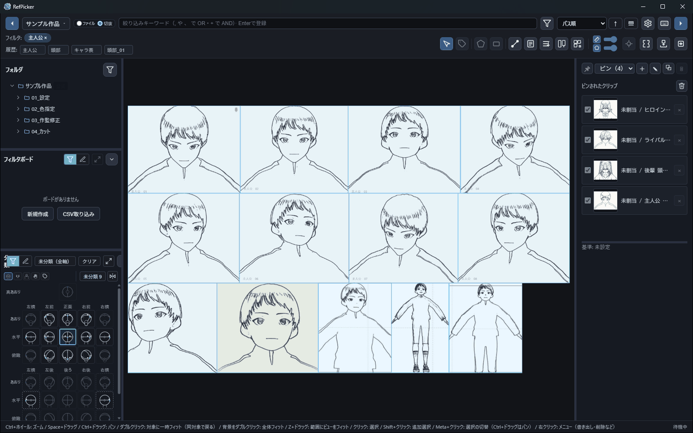
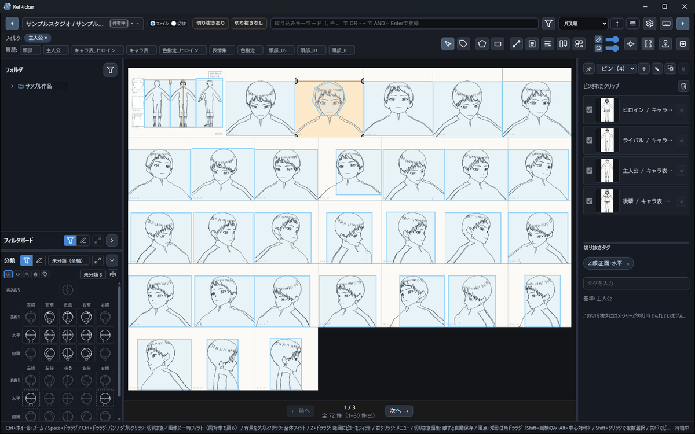
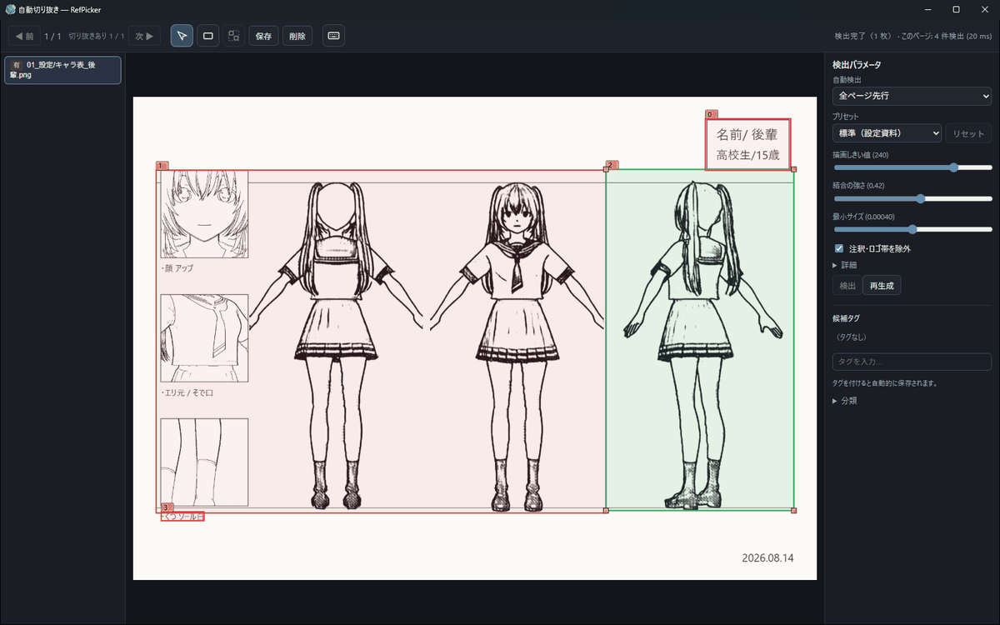
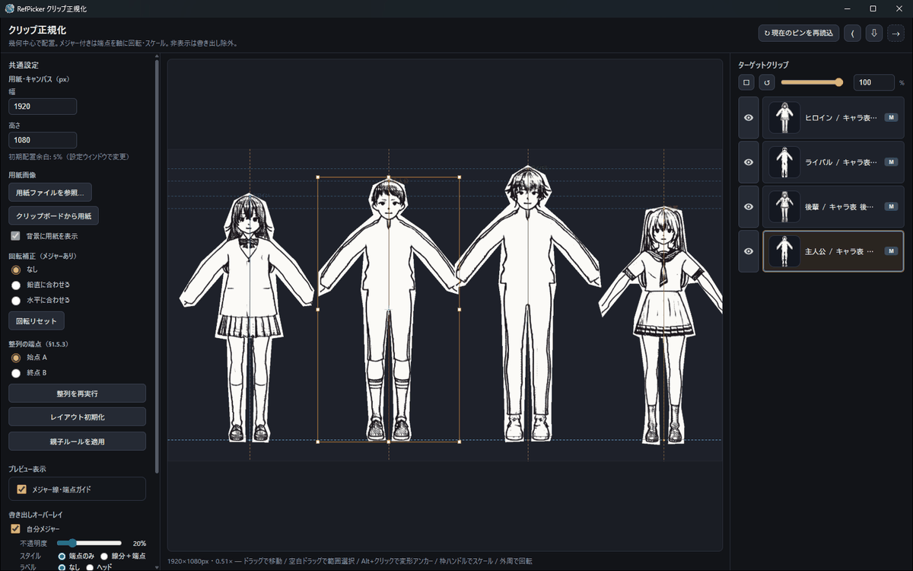
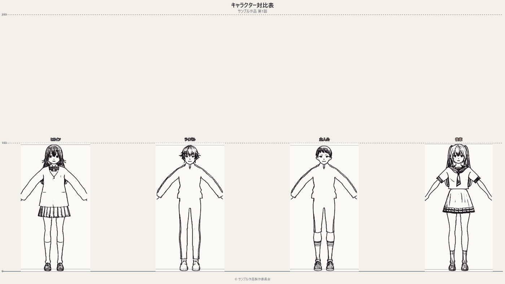

RefPicker は、アニメ制作の設定資料フォルダをそのまま索引化し、 絞り込み・切り抜き・対比正規化・対比表 PNG・制作進行との資料同期までを 1 本でこなす、 現場のためのリファレンス管理ツールです。
インストーラ不要のポータブル版あり ・ フォルダを登録するだけで今日から使えます

設定資料の「管理」は誰の仕事でもないまま、全員の時間を削っています。
数百枚の設定をフォルダ階層で往復。カットに入る前のウォーミングアップが「資料探し」になっている。
キャラ背比べの画像を画像編集ソフトで切り貼りして拡縮合わせ。設定が改訂されるたびに最初からやり直し。
資料の更新をチャットで流しても、誰が古い版で描いているか分からない。案件が複数並行すると混線する。
「探す → 切り抜く → 貼る → 揃える → 配る」。設定資料まわりの一連の流れを、そのままアプリにしました。
資料フォルダを「ルート」として登録するだけで再帰スキャンし SQLite に索引化。ファイル監視で追加・変更にも自動追従します。フォルダ構成は一切変えません。
「主人公, 頭部, 正面」のように複数語で絞り込み。相対パスと切り抜きタグに部分一致し、条件は履歴からワンクリックで復元。部位・アングル・向きのプリセット語彙も同梱。
設定画の必要な部分だけを多角形・フリーハンド・矩形で切り抜き。フリーハンドは平滑化を調整可能。切り抜きにはタグを付けて、それ自体が検索対象になります。
切り抜きは PNG としてクリップボードへ（Windows のファイル貼り付け形式）。CLIP STUDIO PAINT や Photoshop など、ファイル貼り付け対応アプリへ直接持ち込めます。ドラッグ書き出し・フォルダ書き出しも。
キャラごとに「全身」「頭部」などのメジャー（基準線）を割り当てると、基準キャラとの対比でサイズが自動で揃います。頭身チェックやサイズ感の確認が目分量から卒業できます。
ピンした切り抜きを共通ベースラインに整列し、目盛り・キャラ名・タイトル・©表記まで焼き込んだ配布用 PNG を生成。設定が改訂されても、開き直せば最新の見た目で再構成されます。
下の3枚はデモ用に生成した架空の設定資料で操作した実機の画面です。



配る側と受け取る側、両方の立場を最初から設計に組み込んでいます。
対比表は使い捨ての画像ではなく、切り抜きへの生きた参照で組まれたドキュメントです。 元の設定やメジャーを直せば、次に開いたとき最新の見た目で再構成されます。

制作進行が発行元として資料を公開し、アニメーターは受け取りとして プレビューを確認してから適用。専用サーバーは不要で、共有フォルダ・NAS・ZIP 手渡しという 現場に既にある経路をそのまま使います。
設定資料は作品の機密そのものです。だから、疑いようのない設計にしました。
索引 DB（SQLite）・サムネイル・切り抜きは、あなたの PC のアプリデータフォルダにのみ保存。クラウドへの自動アップロードは一切ありません。共有は自分で選んだ共有フォルダか ZIP だけです。
ルート登録は索引を作るだけ。ファイルの移動・リネーム・削除は行いません。ルートをアプリから外しても、ディスク上のフォルダはそのまま残ります。
Rust + SQLite によるネイティブ実装と仮想スクロールで、数千枚規模の索引も軽快に。オフラインでも全機能が動作します（同期チャネルの受け渡しを除く）。
| 対応 OS | Windows 10 / 11（クリップボード・ドラッグ書き出しは Windows 専用機能） |
|---|---|
| 配布形態 | ポータブル版（フォルダごとコピーで動作）／ インストーラ版 |
| データ保存先 | ローカルのアプリデータフォルダ（プロジェクトごとに SQLite DB・サムネを分離） |
| 対応画像 | PNG / JPEG ほか一般的な画像形式（フォルダを再帰スキャンして索引化） |
| 技術基盤 | Tauri 2（Rust）+ React — ネイティブ性能と軽量フットプリント |
| ネットワーク | 不要。同期は共有フォルダ / NAS / ZIP など任意の経路を利用 |
配られた資料を開いて描く側——原画・動画・作監・美術——は、認証なし・件数の制限なしでそのまま使えます。 現場の人数分のライセンスを用意する必要はありません。
All-Access はスイート全ツールが使えるサブスクで、7 日間の無料トライアル付きです。
個人の買い切りは準備中です（状況）。金額と最新のプランは料金ページに掲載しています。
フォルダを 1 つ登録すれば、それだけで始まります。
アカウント登録なし・サーバー不要・データはあなたの PC の中に。
ポータブル版はフォルダごとコピーするだけで動作します